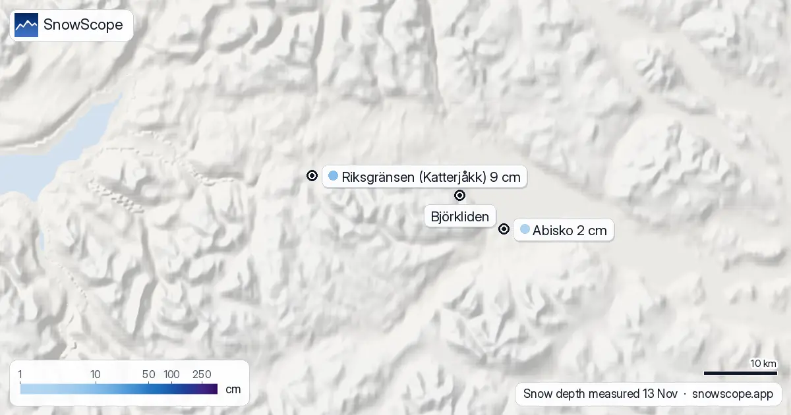

Riksgränsenin ja Björklidenin lumiraportti: rajalla 9 cm, hissejä saa odottaa pitkään (14. marraskuuta 2026)
Ylhäällä Norjan rajalla, reilusti napapiirin pohjoispuolella, talvi on alkanut hiljaa. Katterjåkkin sääasema, 2 km Riksgränsenistä 514 metrissä, mittasi aamulla 13. marraskuuta 9 cm lunta. Alempana Abiskossa, 392 metrissä ja 8 km Björklidenistä, lukema oli 2 cm. Kumpikaan hiihtoalue ei ole auki, ja se on normaalia: molemmissa hissit pyörivät talven lopulta kevääseen, kun aurinko on palannut.
Katso kohteen Riksgränsen lumiennuste reaaliajassa SnowScope-sovelluksessaLumensyvyys, puuterihälytykset ja 3D-kartta, ilmaiseksi.
Mitä asemat kertovat
Katterjåkkissa paljas maa vaihtui 10. marraskuuta 10 senttiin, ja lumensyvyys on pysynyt siitä lähtien samoissa: 11 cm, sitten 9 cm ja taas 9 cm. Viereinen manuaalinen asema ilmoitti 12. marraskuuta 14 cm. Vuorten kuivalla puolella sadevarjossa olevassa Abiskossa lunta ei ole tässä kuussa ollut koskaan yli 2 cm.
Ero on tyypillinen. Riksgränsen on aivan vedenjakajalla ja saa Atlantin lumen ensimmäisenä; Björkliden ja Abisko ovat idempänä, missä ilma on jo pudottanut suurimman osan kosteudestaan.

Tuleva viikko
Ennusteemme seuraaville seitsemälle päivälle antaa noin 9 cm Riksgränsenin huipulle (900 m) ja noin 11 cm sen alaosaan (516 m); Björklidenissä noin 8 cm huipulle (933 m) ja 7 cm alaosaan. Muut ennusteet antavat Riksgränsenin huipulle 6–19 cm. Sää pysyy kylmänä: vettä ei sada millään korkeudella, ja lunta tulee järvien tasolle asti.
Kuinka syvää lunta nyt yleensä on
46 mennyttä talveamme antavat Riksgränsenin tavalliseksi lumensyvyydeksi 14. marraskuuta 46 cm alaosassa ja 65 cm huipulla, ja 15. joulukuuta mennessä 81 ja 99 cm. Björkliden on kuivempi: 28 cm alaosassa ja 56 cm huipulla 14. marraskuuta. Asemat näyttävät, että tämä marraskuu on toistaiseksi selvästi tavallista vähälumisempi.
Riksgränsenin pitkä tilasto ei näytä lumen vähenemistä: huipun keskimääräinen maksimi oli ensimmäisten 15 talven aikana 221 cm ja viimeisten 15 talven aikana 224 cm. Björkliden on myös vakaa, 168 cm ja 165 cm.
Milloin hissit aukeavat
Riksgränsenin virallinen talvikausi 2027 on 18. helmikuuta – 23. toukokuuta, Björklidenin 4. helmikuuta – 2. toukokuuta. Siihen asti aurinko tuskin nousee täällä, ja siksi molemmat odottavat valoa eivätkä lunta. Avautumisen aikaan Riksgränsenin huipulla on keskimääräisenä talvena reilusti yli metri lunta.
Vinkkejä laskijoille
- Tuletko nyt revontulien tai talvikävelyn takia? Odota ohutta lumipeitettä ja hyvin lyhyitä päiviä; lumi ei ole syy perua, valo on suurempi rajoite.
- Katterjåkkin ja Abiskon ympäristön avotunturi on paikoin lumivyörymaastoa vähälläkin lumella; pysy kaamosaikana merkityillä reiteillä.
- Rajan yli kulkeva E10 voi sulkeutua myrskyllä. Tarkista tieolosuhteet ennen lähtöä.
Lisää karttoja (ulkoiset sivustot)
Lähteet ja tekijät
- SMHI, avoin data: päivittäinen lumensyvyys Ruotsin sääasemilla www.smhi.se/data/meteorologi/ladda-ner-meteorologiska-observationer
- Riksgränsen, virallinen sivusto: avauspäivät ja hissitilanne, luettu 13.11.2026 riksgransen.se/om-oss/oppettider-vintersasong/
- Björkliden, virallinen sivusto: avauspäivät ja hissitilanne, luettu 13.11.2026 bjorkliden.com/om-oss/oppettider-vintersasong/
- Lavinprognoser, Ruotsin tunturien lumivyöryennusteet www.lavinprognoser.se/
Näistä luvuista
Mitattu lumi: aamulukemat 13. marraskuuta 2026 Ruotsin (SMHI:n avoin data), Suomen (Ilmatieteen laitoksen avoin data, CC BY 4.0) ja Norjan (MET Norwayn asemaraportit, CC BY 4.0, julkaisija Ogimet) virallisilta sääasemilta. Norjan kansallinen lumikartta seNorge (NVE ja MET Norway, NLOD) antaa rinteille arviot 1 km:n ruudukossa. Omat lukumme: SnowScopen ennuste seuraaville seitsemälle päivälle hiihtokeskuksen kolmella korkeudella, verrattuna riippumattomiin ennusteisiin (ECMWF, ICON, GFS, GEM) ajalle 14.–20. marraskuuta; 46 menneen talven lumihistoria (1980-81–2025-26), korkeuden mukaan korjattu menneisyyden malli. Avauspäivät: hiihtokeskusten omat sivut, luettu 13.11.2026. Rinteiden pituus ja hissien määrä: OpenSkiMap-kartoitus.
Viralliset lumivyöryennusteet: Lavinprognoser (SE) / Varsom (NO)
Viittaa tähän raporttiin
Tutkimukseen, opetukseen tai mediaan: luvut ja kaaviot ovat vapaasti käytettävissä CC BY 4.0 -lisenssillä tällä lähdeviitteellä.
SnowScope (2026), Riksgränsenin ja Björklidenin lumiraportti: rajalla 9 cm, hissejä saa odottaa pitkään (14. marraskuuta 2026), https://snowscope.app/blog/fi/2026/11/riksgransen-bjorkliden-snow-report-14-november-2026.html, luettu 2026-11-14
SnowScope (Atlas Labs). (2026, November 14). Riksgränsenin ja Björklidenin lumiraportti: rajalla 9 cm, hissejä saa odottaa pitkään (14. marraskuuta 2026). SnowScope snow reports. https://snowscope.app/blog/fi/2026/11/riksgransen-bjorkliden-snow-report-14-november-2026.html
BibTeX
@misc{snowscope2026riksgransenbjorklidensno,
author = {{SnowScope (Atlas Labs)}},
title = {Riksgränsenin ja Björklidenin lumiraportti: rajalla 9 cm, hissejä saa odottaa pitkään (14. marraskuuta 2026)},
year = {2026},
month = nov,
howpublished = {\url{https://snowscope.app/blog/fi/2026/11/riksgransen-bjorkliden-snow-report-14-november-2026.html}},
note = {Published 2026-11-14 16:49 UTC; accessed 2026-11-14}
}· CC BY 4.0 · Menetelmät, data ja työkalut →
Riksgränsen: lumi ja lämpötila korkeuden mukaan, tämä talvi ja viime talvi (työkalut) →
Seuraa: Riksgränsen
Ilmainen: viesti, kun uutta lunta on tulossa, ja ennuste joka aamu.
Lisää lumiraportteja

Tampere 13. marraskuuta 2026: Tottijärvellä ja kaupungin ympäristön asemilla 0 cm, koillisessa Hyytiälässä 2 cm. Puolessa talvista Tampere oli valkoinen 10. marraskuuta mennessä. Lauantaina häivähdys märkää lunta.

Tukholman lumensyvyys 13. marraskuuta 2026: 0 cm Observatoriekullenilla ja kaikilla kaupungin ympäristön asemilla. Milloin lumi yleensä tulee ja miksi viikonloppu ei sitä tuo.

Tukholman koiranomistajat, 13. marraskuuta 2026: kaupungissa mitattu 0 cm lunta, lähin 2 cm on 75 km pohjoiseen. Missä koira saa juosta vapaana Tukholmassa, luonnonsuojelualueiden säännöt ja kuiva viikonloppuennuste.